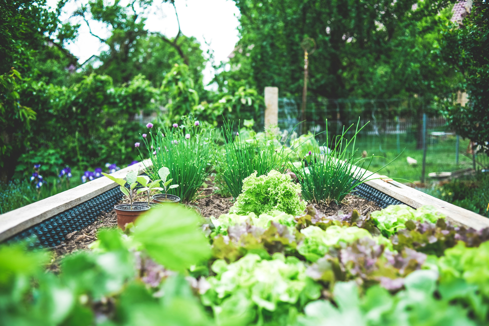

Quem mora na cidade grande onde é rodeado de tecnologias, inovação, rodeado por grandes predios, por luzes, muitas vezes se esquece do que nos sustenta, o alimento. Por trás de cada mordida de cada garfada existe um trabalho, um esforço, uma conexão entre o campo e a cidade. O campo é como se fosse o coração que bombeia vida para a cidade grande,se não fosse aqueles agricultores que acordam logo de manhã cedo para produzir e plantar os grãos, as verduras, frutas e legumes, as preteleiras do mercado, as freias e nossas geladeiras estariam vazias. Então devemos lembrar essa conexão, e festejar ela significa focarmos nela e olhar mais para o campo procurando melhorar a produção com inovaçõe e tecnologia, sempre mantendo essa conexão forte.
A maior porcentagem dos alimentos vem do campo e são produzidos la, o campo alimenta a cidade, sem o campo a cidade não existe, sem essa conexão a cidade estaria morta.
